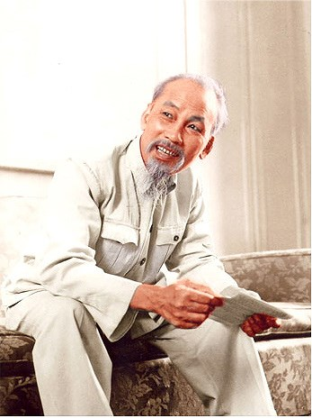
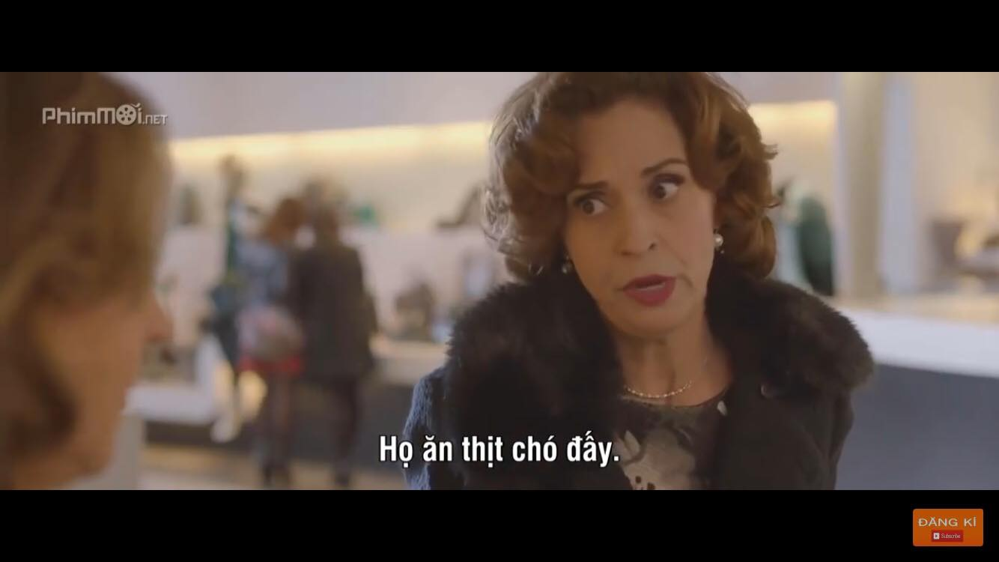

Xuống cuối trang

Năm điều Bác Hồ dạy:
- Yêu Tổ quốc , yêu đồng bào.
- Học tập tốt , lao đọng tốt .
- Đoàn kết tốt , kỷ luật tốt .
- Giữ gìn vệ sinh thật tốt .
- Khiêm tốn thật thà dũng cảm .
Xuất thân tiểu sử của anh Đinh Quang Tuyển :
- Anh Đinh Quang Tuyển sinh ra trong một gia đình nhà nông nghèo có truyền thống yêu nước và Cách mạng . Từ nhỏ anh dã được cha mẹ , ông bà giáo dục về truyền thống yêu nước của gia đình nên trong anh cũng có một lòng nồng nàn yêu nước .
Qúa trình học tập và rèn luyện :
- Năm 2005 anh bắt đầu theo học dưới mái trường Tiểu học Nam Đồng tại đây anh đã nhanh chóng trở thành một tấm gương sáng cho các bạn đồng trang lứa noi theo và học tập với sự mẫu mực của mình .
| Lớp |
Điểm Tb |
| 1 | 9.75 |
| 2 | 9,8 |
| 3 | 10 |
| 4 | 9,9 |
| 5 | 10 |
- Năm 2010 sau 5 năm học tập , rèn luyện xuất sắc tại trường Tiểu học Nam Đồng , anh được trường THCS Nam Đồng tại đây trong môi trường sư phạm tuy còn lạc hậu , nghèo nàn nhưng anh vẫn tiếp tục chủ động sáng tạo học tập và làm theo tấm gương đạo đức của Bác . Anh tiếp tục đạt được nhiều thành tích xuất sắc trong học tập và tiếp tục được bạn bè thầy cô tuyệt đối tin tưởng , yêu mến .
| Lớp |
Điểm Tb |
| 6 | 9.79 |
| 7 | 9,95 |
| 8 | 10 |
| 9 | 9,9 |
- Năm 2014 anh thi đỗ vào trường THPT Hoàng Văn Thụ , tp Hải Dương , đến với một môi trường mới , thầy cô bạn bè mới nhưng anh vẫn thể hiện , phát huy được những phẩm chất tốt đẹp của bản thân , anh luôn đi đầu trong những phong trào thi đua học tập , thể dục thể thao của lớp . Anh vẫn là tấm gương sáng cho các bạn trong toàn trường noi theo .
| Lớp |
Điểm Tb |
| 10 | 9.9 |
| 11 | 9,5 |
| 12 | 10 |
-
Năm 2017 , anh thi tạch nguyện vọng 1 vào trường Sĩ quan Pháo binh và phải theo học nguyện vọng 2 là Học viện Kỹ thuật Mật Mã trực thuộc ban Cơ yếu , bộ Quốc phòng . Hiện tại anh sắp bước vào năm thứ 2 , anh đang cố gắng để đạt được mong muốn của mình , tuy nhiên còn xao nhãng , bị nhiều vấn đề vớ vẩn ảnh hưởng đến học tập , anh quyết định theo hướng lập trình web , dự định của anh là sẽ tự học theo hướng này trong 4 năm , coi như là tự mở thêm cho mình một hướng đi song song với việc học theo chuyên ngành được đào tạo trong trường .
Trang facebook cá nhân của anh là Đinh Tuyển . Anh có sở thích là bóng đá , thần tượng của anh là cầu thủ Marco Reus
Sau đây là một số câu nói hay :
-
“Tin rằng bạn có thể làm một điều gì đó đồng nghĩa với việc bạn đã đi được nửa đường đến đó” – Theodore Roosevelt
-
“Đừng so sánh mình với bất cứ ai trong thế giới này. Nếu bạn làm như vậy có nghĩa bạn đang sỉ nhục chính bản thân mình.” – Bill Gates
-
“Không có hoàn cảnh nào tuyệt vọng, chỉ có người tuyệt vọng vì hoàn cảnh.” -Khuyết danh
-
“Bắt đầu từ nơi bạn đứng. Sử dụng những gì bạn có. Làm những gì bạn có thể” – Arthur Ashe
-
“Tôi có một triết lý đơn giản đó là: lấp đầy những khoảng trống, làm trống những khoảng đầy và gãi những chỗ ngứa.” – Alice Roosevelt Longworth.
-
“Nghèo không là xấu, nghèo mà không có chí mới là xấu; hèn không đáng ghét, hèn mà không có tài mới đáng ghét; già không nên than thở, già mà sống thừa mới đáng than thở; chết không nên bi ai, chết mà vô bổ mới đáng bi ai.” – Lã Khôn.
-
“Cuộc sống chỉ mang lại cho chúng ta 10% cơ hội, 90% còn lại là do chúng ta trải nghiệm thế nào với nó.” – Lou Holtz
Phim hay :
 xem phim hay ý nghĩa Thi Mai , Rumbo a Vietnam
Về đầu trang